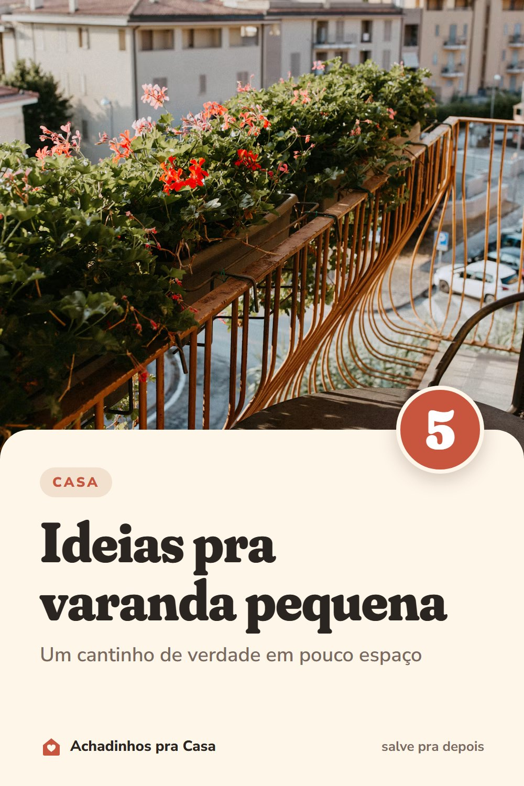

Casa
Varanda pequena: 5 ideias pra aproveitar
Um cantinho de verdade, mesmo com pouco espaço.
- Planta na verticalFloreira pendurada no guarda-corpo e prateleira na parede deixam o chão livre.
- Móvel que dobraMesa de parede que rebate e cadeiras dobráveis: abrem na hora do café e somem depois.
- Tapete de área externaCom uma almofada, vira canto de leitura.
- Luz quentinhaUm varal de lâmpadas muda a varanda à noite.
- Banco que é baúSenta e guarda: vaso vazio, adubo e regador ficam lá dentro.